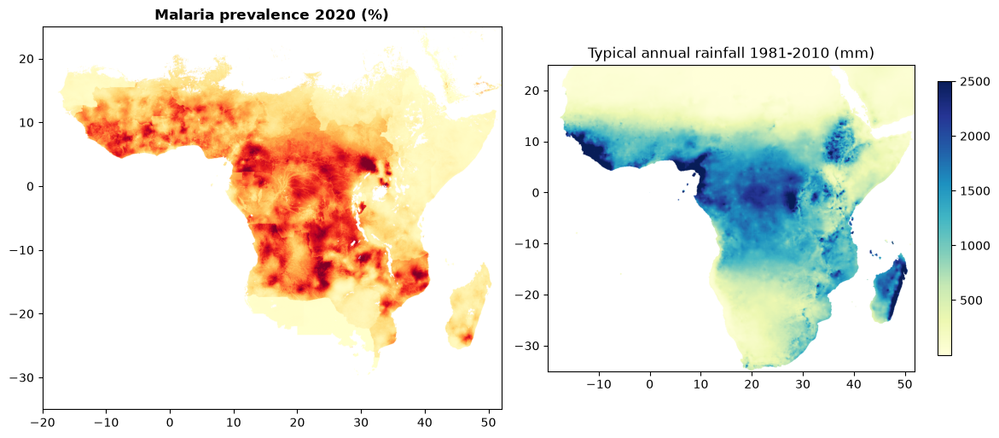
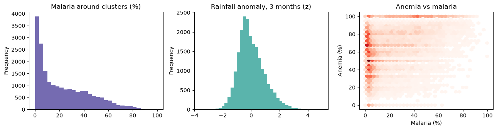

import numpy as np
import pandas as pd
import geopandas as gpd
import rasterio
import xarray as xr
from rasterio.transform import from_origin
from rasterstats import zonal_stats
from config import PRIVATE, CHIRPS_MONTHLY, MAP_DIR, AFRICA_BBOX, AFRICA_EQUAL_AREAStep 2. Add raster-based features to each cluster (zonal statistics).
- Buffers: 2 km (urban) / 5 km (rural), matching DHS GPS displacement.
- Malaria: Malaria Atlas Project P. falciparum prevalence (age 2-10), mean over the buffer, for the cluster’s interview year.
- Rainfall: CHIRPS monthly. Total rain in the 3 months before the interview month, as a standardized anomaly (z-score) against the same 3 calendar months in 1981-2010 at that location. Plus the long-term (1981-2010) mean annual rainfall.
Input : data/private/clusters.parquet Output: data/private/clusters_features.parquet
Run on the author’s computer. The DHS data are private, so the outputs shown here are summaries only (no cluster locations or survey records).
cl = pd.read_parquet(PRIVATE / "clusters.parquet")
pts = gpd.GeoDataFrame(cl, geometry=gpd.points_from_xy(cl.lon, cl.lat), crs="EPSG:4326")Buffers (in metres, using an equal-area projection)
pts_m = pts.to_crs(AFRICA_EQUAL_AREA)
radius = np.where(pts_m.urban == 1, 2000, 5000)
buf = pts_m.buffer(radius).to_crs("EPSG:4326")
print(f"{len(buf):,} buffers built")22,097 buffers builtdef zonal_mean(geoms, array, transform, nodata):
out = zonal_stats(list(geoms), array, affine=transform, stats=["mean"],
nodata=nodata, all_touched=True)
return np.array([o["mean"] if o["mean"] is not None else np.nan for o in out])Malaria (map pfpr 2-10), matched to interview year
cl["pfpr"] = np.nan
for yr, idx in cl.groupby(cl.int_year.clip(2000, 2021)).groups.items():
with rasterio.open(MAP_DIR / f"PfPR_2-10_Africa_{yr}.tif") as src:
arr = src.read(1).astype("float32")
nod = src.nodata
if nod is not None:
arr[arr == nod] = np.nan
arr[arr < 0] = np.nan
cl.loc[idx, "pfpr"] = zonal_mean(buf.loc[idx], arr, src.transform, np.nan) * 100
print(f" malaria {yr}: {len(idx):,} clusters") malaria 2000: 119 clusters
malaria 2001: 534 clusters
malaria 2003: 1,037 clusters
malaria 2004: 717 clusters
malaria 2005: 1,560 clusters
malaria 2006: 770 clusters
malaria 2007: 51 clusters
malaria 2008: 728 clusters
malaria 2009: 529 clusters
malaria 2010: 2,140 clusters
malaria 2011: 1,661 clusters
malaria 2012: 1,552 clusters
malaria 2013: 834 clusters
malaria 2014: 798 clusters
malaria 2015: 1,906 clusters
malaria 2016: 2,279 clusters
malaria 2017: 857 clusters
malaria 2018: 2,291 clusters
malaria 2019: 661 clusters
malaria 2020: 557 clusters
malaria 2021: 516 clustersRainfall (chirps monthly)
lon0, lat0, lon1, lat1 = AFRICA_BBOX
YEARS = range(1981, 2022)
BASE = (1981, 2010)def open_year(y):
ds = xr.open_dataset(CHIRPS_MONTHLY / f"CHIRPS_monthly_{y}.nc")
return ds["precip"].sel(longitude=slice(lon0, lon1), latitude=slice(lat1, lat0))# load all years once (Africa subset), as a dict of (12, ny, nx) float32 arrays
print("Loading CHIRPS (Africa subset)...")
rain = {}
for y in range(YEARS.start - 1, YEARS.stop):
try:
da = open_year(y)
except FileNotFoundError:
continue
rain[y] = da.values.astype("float32")
lats, lons = da.latitude.values, da.longitude.values
res = abs(float(lons[1] - lons[0]))
transform = from_origin(lons.min() - res / 2, lats.max() + res / 2, res, res)Loading CHIRPS (Africa subset)...def three_month_total(y, end_month):
"""Rain total for the 3 months ending in end_month (1-12) of year y."""
tot = 0
for k in range(3):
m, yy = end_month - k, y
if m <= 0:
m, yy = m + 12, y - 1
if yy not in rain:
return None
tot = tot + rain[yy][m - 1]
return tot# long-term mean annual rainfall (1981-2010)
annual = np.nanmean([rain[y].sum(axis=0) for y in range(BASE[0], BASE[1] + 1)], axis=0)
cl["rain_annual_mm"] = zonal_mean(buf, annual, transform, np.nan)# 3-month anomaly: window ends the month BEFORE the interview month
end = cl.int_month - 1
end_year = np.where(end == 0, cl.int_year - 1, cl.int_year)
end = np.where(end == 0, 12, end)
cl["rain_end_month"], cl["rain_end_year"] = end, end_year
cl["rain_3mo_mm"] = np.nan
cl["rain_3mo_z"] = np.nanfor e in range(1, 13):
base = [three_month_total(y, e) for y in range(BASE[0], BASE[1] + 1)]
base = np.stack([b for b in base if b is not None]) # 1981 Jan/Feb windows need 1980 (no data)
mu, sd = base.mean(axis=0), base.std(axis=0)
sd[sd < 1] = np.nan # near-zero variability (desert) -> undefined
for y in sorted(set(end_year[end == e])):
idx = cl.index[(end == e) & (end_year == y)]
tot = three_month_total(y, e)
z = np.clip((tot - mu) / sd, -5, 5)
cl.loc[idx, "rain_3mo_mm"] = zonal_mean(buf.loc[idx], tot, transform, np.nan)
cl.loc[idx, "rain_3mo_z"] = zonal_mean(buf.loc[idx], z, transform, np.nan)
print(f" rainfall window ending month {e:2d} done") rainfall window ending month 1 done
rainfall window ending month 2 done
rainfall window ending month 3 done
rainfall window ending month 4 done
rainfall window ending month 5 done
rainfall window ending month 6 done
rainfall window ending month 7 done
rainfall window ending month 8 done
rainfall window ending month 9 done
rainfall window ending month 10 done
rainfall window ending month 11 done
rainfall window ending month 12 donecl.to_parquet(PRIVATE / "clusters_features.parquet", index=False)
print(cl[["pfpr", "rain_annual_mm", "rain_3mo_mm", "rain_3mo_z"]].describe().round(2).to_string())
print("Missing:", cl[["pfpr", "rain_3mo_z"]].isna().sum().to_dict()) pfpr rain_annual_mm rain_3mo_mm rain_3mo_z
count 21240.00 22097.00 22097.00 21661.00
mean 23.40 1288.29 316.43 0.02
std 20.92 706.56 313.55 0.94
min 0.05 26.62 0.00 -3.59
25% 4.75 848.07 59.73 -0.62
50% 17.26 1144.07 257.41 -0.12
75% 38.22 1512.79 470.77 0.57
max 99.73 4539.61 2924.10 4.99
Missing: {'pfpr': 857, 'rain_3mo_z': 436}Look at the rasters (open data)
import matplotlib.pyplot as plt
from rasterio.plot import show
fig, axes = plt.subplots(1, 2, figsize=(12, 5))
with rasterio.open(MAP_DIR / "PfPR_2-10_Africa_2020.tif") as src:
a = src.read(1, masked=True)
a = np.ma.masked_less(a, 0)
show(a * 100, transform=src.transform, ax=axes[0], cmap="YlOrRd", vmin=0, vmax=70,
title="Malaria prevalence 2020 (%)")
im = axes[1].imshow(annual, extent=[lons.min(), lons.max(), lats.min(), lats.max()], cmap="YlGnBu", vmax=2500)
axes[1].set_title("Typical annual rainfall 1981-2010 (mm)")
fig.colorbar(im, ax=axes[1], shrink=0.7)
plt.tight_layout(); plt.show()
The extracted values
fig, axes = plt.subplots(1, 3, figsize=(13, 3.5))
cl.pfpr.plot.hist(bins=30, ax=axes[0], color="#756bb1", title="Malaria around clusters (%)")
cl.rain_3mo_z.plot.hist(bins=40, ax=axes[1], color="#5ab4ac", title="Rainfall anomaly, 3 months (z)")
axes[2].hexbin(cl.pfpr, cl.anemia_pct, gridsize=35, cmap="Reds", mincnt=1)
axes[2].set(xlabel="Malaria (%)", ylabel="Anemia (%)", title="Anemia vs malaria")
plt.tight_layout(); plt.show()